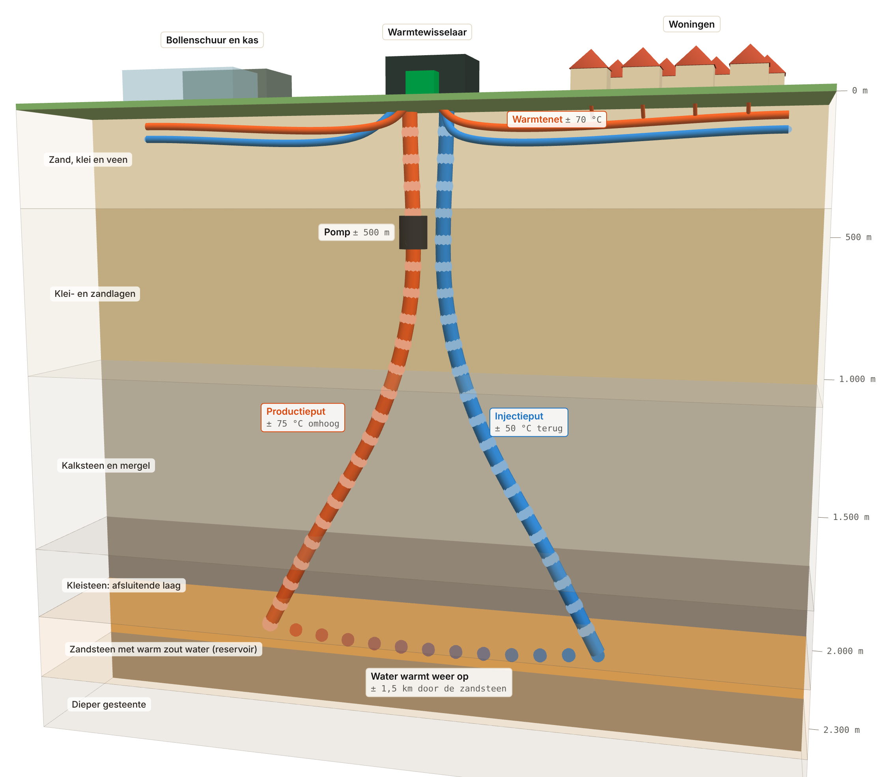
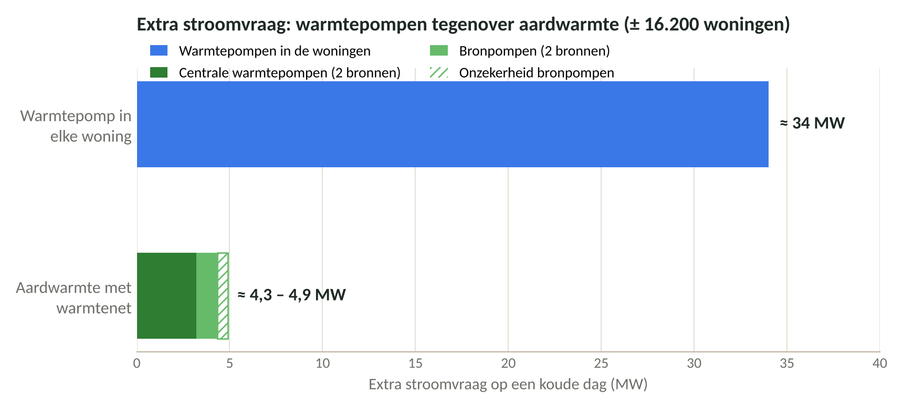
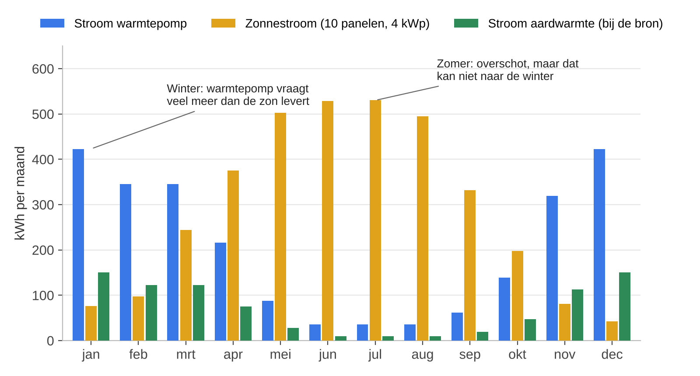
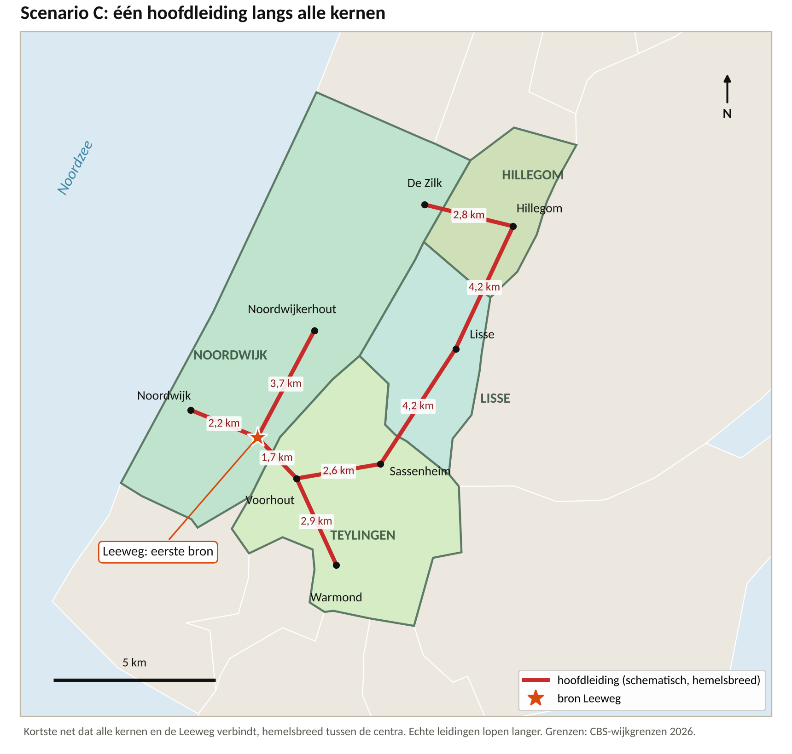
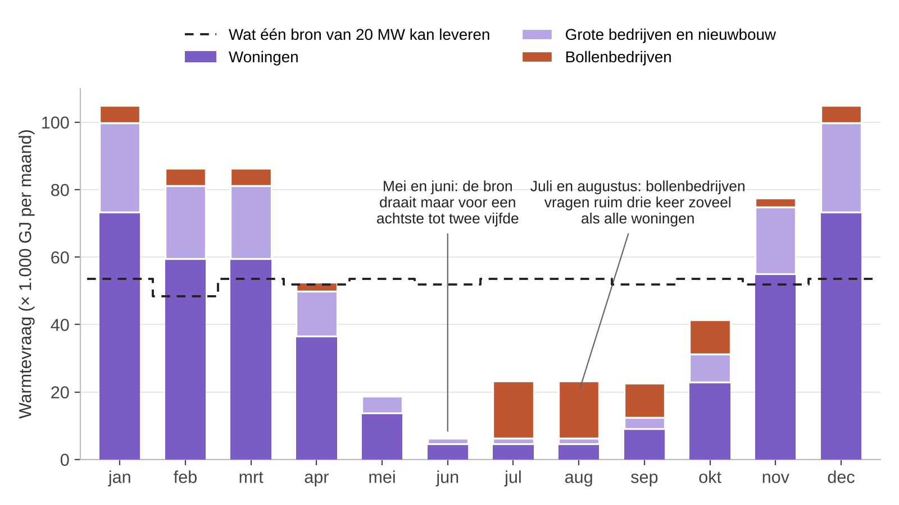
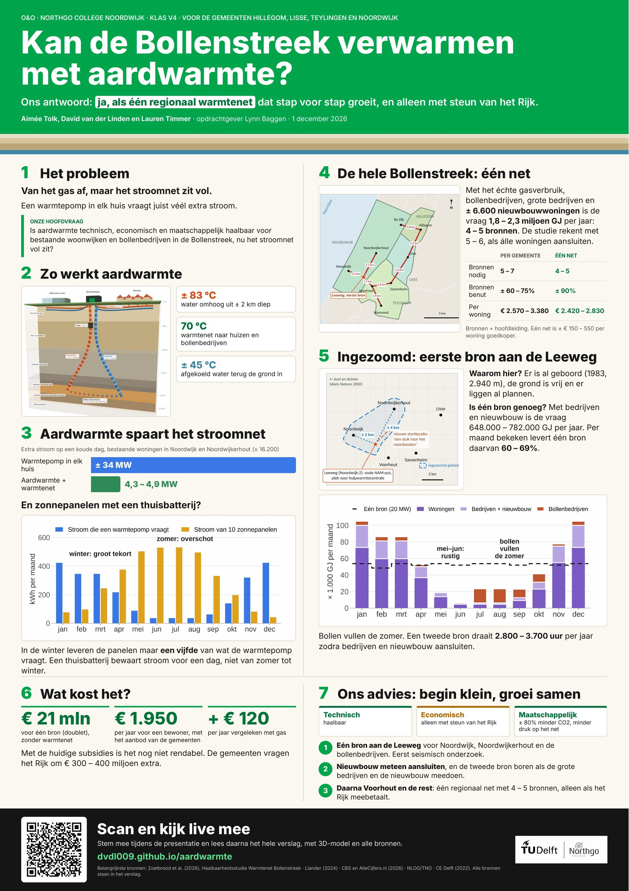
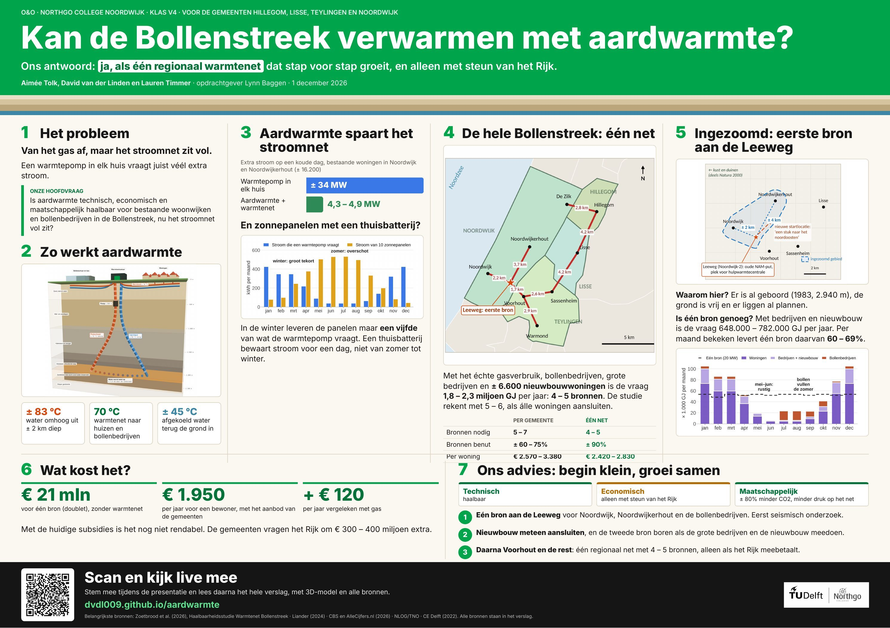

Kan de Bollenstreek verwarmen met aardwarmte?
Het stroomnet zit vol en we moeten van het gas af. Wij onderzochten of warm water van ruim twee kilometer diep een uitweg is.
Ja, als één regionaal warmtenet dat stap voor stap groeit. Technisch kan het en het ontlast het stroomnet, maar zonder extra steun van het Rijk is het nu niet betaalbaar.
In hoeverre is aardwarmte een technisch, economisch en maatschappelijk haalbare oplossing voor het verduurzamen van bestaande woonwijken en bollenbedrijven in de Bollenstreek, rekening houdend met de beperkingen van het elektriciteitsnet?
Het verhaal in zeven stappen
-
01
Het probleem: van het gas af, maar het stroomnet zit vol
De gemeenten Hillegom, Lisse, Teylingen en Noordwijk willen woningen en bollenbedrijven van het aardgas af halen. Maar het stroomnet in de regio zit vol, en een warmtepomp in elk huis vraagt juist veel extra stroom. Kan warmte uit de diepte een uitweg zijn?
-
02
Hoe werkt aardwarmte?
Warm water van 2 tot 3 kilometer diep wordt opgepompt, geeft zijn warmte af aan een warmtenet van ongeveer 70 °C en gaat afgekoeld terug de grond in. Twee putten samen heten een doublet.

Figuur 1. Een aardwarmtedoublet. -
03
Aardwarmte spaart het stroomnet
34 MWextra stroom met warmtepompen (Noordwijk en Noordwijkerhout, koude dag)4,3–4,9 MWmet aardwarmteZonnepanelen met een thuisbatterij lossen dat niet op: in de winter leveren ze maar een vijfde van de stroom die een warmtepomp dan vraagt.

Figuur 2. Extra stroomvraag op een koude dag. 
Figuur 3. Zonnestroom en warmtepomp per maand. -
04
De hele Bollenstreek: één regionaal net
4–5bronnen voor woningen, bollenbedrijven, grote bedrijven en nieuwbouw± 90%van de bronnen wordt gebruikt (per gemeente ± 60–75%)€ 150–550per woning goedkoper dan een net per gemeenteWe rekenden met het echte gasverbruik per woonplaats, en telden ook de bollenbedrijven, 229 grote bedrijven en de ongeveer 6.600 nieuwbouwwoningen tot en met 2035 mee. Samen is dat 1,8 tot 2,3 miljoen GJ per jaar. Daarna vergeleken we twee manieren: elke gemeente een eigen net, of één net door de hele regio. In één net vullen de bronnen elkaar aan, dus zijn er één tot twee bronnen minder nodig.

Figuur 5. Eén hoofdleiding langs alle kernen. -
05
Ingezoomd: de eerste bron aan de Leeweg
Bij de Leeweg in Noordwijk is al geboord, de grond is vrij en er liggen al plannen. Noordwijk en Noordwijkerhout vragen met de bollenbedrijven, grote bedrijven en nieuwbouw 648.000 tot 782.000 GJ per jaar. Per maand bekeken levert één bron daarvan 60 tot 69 procent. In de zomer houden de bollenbedrijven de bron aan het draaien, en een tweede bron wordt nuttig zodra de grote bedrijven en de nieuwbouw aansluiten.

Figuur 7. Warmtevraag per maand tegenover één bron van 20 MW. -
06
Wat kost het?
€ 21 mlnvoor één doublet, zonder warmtenet± € 1.950per jaar voor een bewoner, zo'n € 120 meer dan met gasBijna al het geld zit vooraf in het boren en de leidingen. Ook met de huidige subsidies is het project nu niet rendabel. Bollenbedrijven helpen, omdat de bron door hen meer uren per jaar draait.
-
07
Ons advies: begin klein, groei samen
Begin met één bron aan de Leeweg voor Noordwijk, Noordwijkerhout en de bollenbedrijven. Sluit nieuwbouwwijken meteen aan en boor de tweede bron zodra de grote bedrijven en de nieuwbouw aansluiten. Sluit daarna Voorhout aan en groei stap voor stap naar één regionaal net met vier tot vijf bronnen, alleen als het Rijk meebetaalt en garanties geeft.
Het team
Warmte uit de diepte
Het hele verslag, bladzijde voor bladzijde. Tik op een bladzijde om hem groot te openen. Onder elk hoofdstuk staan de bronnen die we daarin gebruikten.
Het verslag wordt geladen…
Onze posters
Twee versies op A1: staand en liggend. Tik op een poster om hem groot te openen en in te zoomen.


Alle bronnen
Alle bronnen uit het verslag. Bij elke bron zie je in welk hoofdstuk we hem gebruikten; tik daarop om naar die bladzijden te gaan.